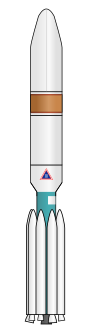
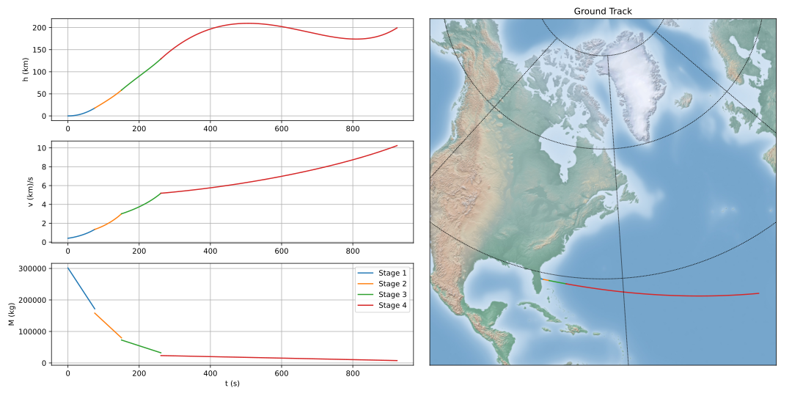

Delta 3 Multi-phase GTO Transfer¶


Delta 3 Rocket.¶
Courtesy W. D. Graham.
As an example of a multi-phase optimal control problem, we will optimize the launch and geostationary transfer orbit insertion of a Delta 3 rocket as described by Betts in [1].
Note
We should note that this example is derived entirely from publicly available sources (see [1-4]). Furthermore, this problem is routinely used [1-4] as a benchmark for generic multi-phase optimal control packages such as ASSET.
The Delta 3 was nominally a 2 stage rocket consisting of a first stage RS-27A and 9 solid rocket boosters topped with an RL-10 upper stage. The rocket had an interesting staging strategy with the first stage liquid engine and only 6 of the 9 SRBs igniting at take off. Following burnout of these 6 solid rocket boosters 75.2 seconds after launch, the inert mass is ejected and the remaining 3 boosters are ignited. After another 75.2 seconds (t+150.4s) these 3 SRBs too are ejected and the first stage continues to burn until t+261s. At this point the RL-10 upper stage and payload separate from the first stage and continue to orbit, burning for up to an additional 700 seconds.
Betts’ problem in [1] involves maximizing the mass delivered to a pre-specified geostationary orbit for a launch from cape Canaveral. This problem can be broken down into 4 phases:
6 SRBs + First Stage ( 0.0 <= t <= 75.2s)
3 SRBs + First Stage ( 75.2s <= t <= 150.4s)
First Stage (150.4s <= t <= 261.0s)
Second Stage. (261.0s <= t <= 961.0s)
The dynamics on each of the four phases are expressed in Cartesian coordinates and are all the same save for differing values for the combined thrust and mass flow-rate of the currently burning engine configurations. The thrust (\(T_i\)) , and mass flow rate (\(\dot{m}_i\)), and inert masses for stages can be found in [1] and in our example script.
Initial conditions applied to the first phase enforce that the rocket depart from the Cape’s latitude with zero velocity relative to the surface of the Earth.
Terminal conditions applied to the final phase enforce that the rocket insert into a geostationary transfer orbit with the following classical orbital elements.
Modeling this problem in ASSET starts with defining the dynamics for each phase. Since the structure of the dynamics is the same for all 4 phases, we can model them with a single ASSET ODE given below.
class RocketODE(oc.ODEBase):
def __init__(self,T,mdot):
####################################################
XtU = oc.ODEArguments(7,3)
R = XtU.XVec().head3()
V = XtU.XVec().segment3(3)
m = XtU.XVar(6)
# We normalize the control direction in the dynamics so it doesnt have
# to be done as a path constraint
u = XtU.UVec().normalized()
h = R.norm() - Re
rho = RhoAir * vf.exp(-h / h_scale)
Vr = V + R.cross(np.array([0,0,We]))
## We cant let let Vr be exactly 0, derivative of norm of 0 vector is NAN
## Will handle this in inititial conditions
D = (-0.5*CD*S)*rho*(Vr*Vr.norm())
Rdot = V
Vdot = (-mu)*R.normalized_power3() + (T*u + D)/m
ode = vf.stack(Rdot,Vdot,-mdot)
####################################################
super().__init__(ode,7,3)
As you might have noticed, our model is written in Cartesian coordinates, but our terminal boundary conditions on the final phase are given
as a set of classical orbital elements. This necessitates writing a custom constraint (below), which will convert from Cartesian coordinates to
orbital elements so that we can target the given orbit. Those familiar with this conversion will know that it requires quadrant checks on the RAAN
and argument of periapse, and thus requires a run-time conditional statement. Such simple conditional statements can be readily handled in ASSET’s VectorFunction type system,
using the vf.ifelse function as seen below. The first argument of the function is a conditional statement containing at least one ASSET VectorFunction.
At run time, if this statement, evaluates to True, output of the function will be given by the second argument,
and if it evaluates to False , the output will be the final argument.
def TargetOrbit(at,et,it, Ot,Wt):
R,V = Args(6).tolist([(0,3),(3,3)])
r = R.norm()
v = V.norm()
#Angular momentum vector
hvec = R.cross(V)
#Node vector
nvec = vf.cross([0,0,1],hvec)
# Energy
eps = 0.5*(v**2) - mu/r
# Semi-major axis
a = -0.5*mu/eps
evec = V.cross(hvec)/mu - R.normalized()
#Eccentrcity
e = evec.norm()
#inclination
i = vf.arccos(hvec.normalized()[2])
#RAAN
O = vf.arccos(nvec.normalized()[0])
# Quadrant Check
O = vf.ifelse(nvec[1]>0,O,2*np.pi -O)
# Argument of periapse
W = vf.arccos(nvec.normalized().dot(evec.normalized()))
#QuadrantCheck
W = vf.ifelse(evec[2]>0,W,2*np.pi-W)
return vf.stack([a,e,i,O,W]) - np.array([at,et,it,Ot,Wt])
With our dynamics and custom boundary constraint defined we can now begin the task of setting up and solving the problem.
Our first step here will be to find a suitable initial guess for all four phases of the rockets flight as shown below. To do this, we adopt a similar strategy to Betts of selecting a state along the target orbit, and linearly interpolating from our known initial conditions. We roughly select this terminal state such that the linearly interpolated initial guess departs the cape in an easterly direction and does not pass under the surface of the Earth. This initial guess is evenly partitioned in time to construct the position and velocity along each phase. Because the dynamics do not allow throttling of the engine, we can also supply the exact mass history for each phase. The thrust directions are arbitrarily set to the unit y direction.
# Target orbital elements
at = 24361140 /Lstar
et = .7308
Ot = np.deg2rad(269.8)
Wt = np.deg2rad(130.5)
istart = np.deg2rad(28.5)
y0 = np.zeros((6))
y0[0:3] = np.array([np.cos(istart),0,np.sin(istart)])*Re
y0[3:6] =-np.cross(y0[0:3],np.array([0,0,We]))
y0[3] += 0.00001/Vstar # cant be exactly zero,our drag equation's derivative would NAN !!!
## MF is the only magic number in the script, just trying to find
## a mean anomaly such that the terminal state on the orbit is downrange
## eastward from KSC in and doesnt pass through earth when LERPed from KSC
MF =-.05
OEF = [at,et,istart,Ot,Wt,MF]
yf = ast.Astro.classic_to_cartesian(OEF,mu)
ts = np.linspace(0,tf_phase4,1000)
IG1 =[]
IG2 =[]
IG3 =[]
IG4 =[]
for t in ts:
X = np.zeros((11))
X[0:6]= y0 + (yf-y0)*(t/ts[-1])
X[7] = t
X[8:11]= np.array([0,1,0])
if(t<tf_phase1):
m= m0_phase1 + (mf_phase1-m0_phase1)*(t/tf_phase1)
X[6]=m
IG1.append(X)
elif(t<tf_phase2):
m= m0_phase2 + (mf_phase2-m0_phase2)*(( t-tf_phase1) / (tf_phase2 - tf_phase1))
X[6]=m
IG2.append(X)
elif(t<tf_phase3):
m= m0_phase3 + (mf_phase3-m0_phase3)*(( t-tf_phase2) / (tf_phase3 - tf_phase2))
X[6]=m
IG3.append(X)
elif(t<tf_phase4):
m= m0_phase4 + (mf_phase4-m0_phase4)*(( t-tf_phase3) / (tf_phase4 - tf_phase3))
X[6]=m
IG4.append(X)
Now we can instantiate (below), the ODE’s and phases for each of the 4 rocket stages and combine them into a single optimal control problem.
On the first phase we apply our known initial state, time, and mass as a boundary value. The length of the phase is then enforced by fixing the
final time of the last state to be equal to the burnout time of the first 6 SRB’s.
The initial position, velocity, and time of phases 2 and 3 will be dictated by later continuity constraints,
so along these phases we only need to explicitly enforce the known initial mass and burnout times given in the problem statement.
In phase4, since the final burnout time of the final stage is not known, we simply place the upper bound to be the time at which all propellant would have been expended.
Additionally, it is to this phase that we apply our terminal constraint on the target orbit, and our objective to maximize final mass.
Finally, we combine these 4 phases into a single optimal control problem and add a link constraint that enforces position, velocity,
and time continuity between sequential phases.
We then run solve_optimize() on the problem with the line search enabled and return the solution for plotting.
ode1 = RocketODE(T_phase1,mdot_phase1)
ode2 = RocketODE(T_phase2,mdot_phase2)
ode3 = RocketODE(T_phase3,mdot_phase3)
ode4 = RocketODE(T_phase4,mdot_phase4)
tmode = "LGL3"
cmode = "HighestOrderSpline"
nsegs1 = 40
nsegs2 = 40
nsegs3 = 40
nsegs4 = 40
#########################################
phase1 = ode1.phase(tmode,IG1,nsegs1)
phase1.setControlMode(cmode)
## Thrust direction is normalized in dynamics, so we dont
## have to enforce norm of 1 on controls. For good measure,
## we do bound the magnitude to prevent it from becoming too large or small
phase1.addLUNormBound("Path",[8,9,10],.5,1.5)
phase1.addBoundaryValue("Front",range(0,8),IG1[0][0:8])
#Dont want our bound to interfere with initial condition which starts at Re
#so i relax the Earth radius constraint slightly here
phase1.addLowerNormBound("Path",[0,1,2],Re*.999999)
phase1.addBoundaryValue("Back",[7],[tf_phase1])
#########################################
phase2 = ode2.phase(tmode,IG2,nsegs2)
phase2.setControlMode(cmode)
phase2.addLowerNormBound("Path",[0,1,2],Re)
phase2.addLUNormBound("Path",[8,9,10],.5,1.5)
## Fixing initial mass and final time on first 3 phases.
## Since the engine cant be throttled, constraining final mass
## as well would be redundant and over-constrained
phase2.addBoundaryValue("Front",[6], [m0_phase2])
phase2.addBoundaryValue("Back", [7] ,[tf_phase2])
#########################################
phase3 = ode3.phase(tmode,IG3,nsegs3)
phase3.setControlMode(cmode)
phase3.addLowerNormBound("Path",[0,1,2],Re)
phase3.addLUNormBound("Path",[8,9,10],.5,1.5)
phase3.addBoundaryValue("Front",[6], [m0_phase3])
phase3.addBoundaryValue("Back", [7] ,[tf_phase3])
#########################################
phase4 = ode4.phase(tmode,IG4,nsegs4)
phase4.setControlMode(cmode)
phase4.addLowerNormBound("Path",[0,1,2],Re)
phase4.addLUNormBound("Path",[8,9,10],.5,1.5)
phase4.addBoundaryValue("Front",[6], [m0_phase4])
phase4.addUpperVarBound("Back",7,tf_phase4,1.0)
phase4.addEqualCon("Back",TargetOrbit(at,et,istart,Ot,Wt),range(0,6))
# Maximize final mass
phase4.addValueObjective("Back",6,-1.0)
#########################################
ocp = oc.OptimalControlProblem()
ocp.addPhase(phase1)
ocp.addPhase(phase2)
ocp.addPhase(phase3)
ocp.addPhase(phase4)
## All phases continuous in everything but mass (var 6)
ocp.addForwardLinkEqualCon(phase1,phase4,[0,1,2,3,4,5, 7,8,9,10])
ocp.optimizer.set_OptLSMode("L1")
ocp.optimizer.set_SoeLSMode("L1")
ocp.optimizer.set_MaxLSIters(2)
ocp.optimizer.set_PrintLevel(1)
ocp.solve_optimize()
Phase1Traj = phase1.returnTraj() # or ocp.Phase(i).returnTraj()
Phase2Traj = phase2.returnTraj()
Phase3Traj = phase3.returnTraj()
Phase4Traj = phase4.returnTraj()
print("Final Mass = ",Phase4Traj[-1][6]*Mstar,' kg')
Plot(Phase1Traj,Phase2Traj,Phase3Traj,Phase4Traj)
On an intel i9-12900k ,using 160 LGL3 segments across all 4 phases, this problem solves in approximately 60 milliseconds. The altitude, velocity and mass of the rocket as function of time are plotted below along with a ground-track of the trajectory. Final Mass Delivered to the GTO is 7529.749kg, which is effectively the same as that given by Betts (7529.712 kg).


References¶
Betts, J.T. “Practical methods for Optimal Control and Estimation Using Nonlinear Programming”, Cambridge University Press, 2009
Agamawi, Y. M., & Rao, A. V. (2020). Cgpops: A c++ software for solving multiple-phase optimal control problems using adaptive gaussian quadrature collocation and sparse nonlinear programming. ACM Transactions on Mathematical Software (TOMS), 46(3), 1-38.
Patterson, M. A., & Rao, A. V. (2014). GPOPS-II: A MATLAB software for solving multiple-phase optimal control problems using hp-adaptive Gaussian quadrature collocation methods and sparse nonlinear programming. ACM Transactions on Mathematical Software (TOMS), 41(1), 1-37.
Benson, D. (2005). A Gauss pseudospectral transcription for optimal control (Doctoral dissertation, Massachusetts Institute of Technology).
Full Code¶
The complete Python implementation is included below.
1import numpy as np
2import asset_asrl as ast
3import matplotlib.pyplot as plt
4
5import sys
6PY_VER = sys.version_info
7USE_BASEMAP = PY_VER < (3, 10)
8
9if USE_BASEMAP:
10 from mpl_toolkits.basemap import Basemap ## PIP INSTALL Basemap if you dont have it
11else :
12 import cartopy.crs as ccrs
13 from pyproj import Geod
14
15vf = ast.VectorFunctions
16oc = ast.OptimalControl
17Args = vf.Arguments
18
19############################################################################
20
21g0 = 9.80665
22Lstar = 6378145 ## m Radius of Earth
23Tstar = 961.0 ## sec Engine Burn Time
24Mstar = 301454.0 ## kgs Inital Mass of Rocket
25
26
27Astar = Lstar/Tstar**2
28Vstar = Lstar/Tstar
29Rhostar = Mstar/Lstar**3
30Estar = Mstar*(Vstar**2)
31Mustar = (Lstar**3)/(Tstar**2)
32Fstar = Astar*Mstar
33#############################################################################
34
35mu = 3.986012e14 /Mustar
36Re = 6378145 /Lstar
37We = 7.29211585e-5 *Tstar
38
39RhoAir = 1.225 /Rhostar
40h_scale = 7200 /Lstar
41g = g0 /Astar
42
43
44CD = .5
45S = 4*np.pi /Lstar**2
46
47
48
49TS = 628500 /Fstar
50T1 = 1083100 /Fstar
51T2 = 110094 /Fstar
52
53IS = 283.33364 /Tstar
54I1 = 301.68 /Tstar
55I2 = 467.21 /Tstar
56
57tS = 75.2 /Tstar
58t1 = 261 /Tstar
59t2 = 700 /Tstar
60
61
62TMS = 19290 /Mstar
63TM1 = 104380 /Mstar
64TM2 = 19300 /Mstar
65TMPay = 4164 /Mstar
66
67
68PMS = 17010 /Mstar
69PM1 = 95550 /Mstar
70PM2 = 16820 /Mstar
71
72SMS = TMS - PMS
73SM1 = TM1 - PM1
74SM2 = TM2 - PM2
75
76T_phase1 = 6*TS + T1
77T_phase2 = 3*TS + T1
78T_phase3 = T1
79T_phase4 = T2
80
81mdot_phase1 = (6*TS/IS + T1/I1)/g
82mdot_phase2 = (3*TS/IS + T1/I1)/g
83mdot_phase3 = T1/(g*I1)
84mdot_phase4 = T2/(g*I2)
85
86
87tf_phase1 = tS
88tf_phase2 = 2*tS
89tf_phase3 = t1
90tf_phase4 = t1+t2
91
92m0_phase1 = 9*TMS + TM1 + TM2 + TMPay
93mf_phase1 = m0_phase1 - 6*PMS - (tS/t1)*PM1
94
95m0_phase2 = mf_phase1 - 6*SMS
96mf_phase2 = m0_phase2 - 3*PMS - (tS/t1)*PM1
97
98m0_phase3 = mf_phase2 - 3*SMS
99mf_phase3 = m0_phase3 - (1 - 2*tS/t1)*PM1
100
101m0_phase4 = mf_phase3 - SM1
102mf_phase4 = m0_phase4 - PM2
103
104
105#############################################################################
106class RocketODE(oc.ODEBase):
107 def __init__(self,T,mdot):
108 ####################################################
109 XtU = oc.ODEArguments(7,3)
110
111 R = XtU.XVec().head3()
112 V = XtU.XVec().segment3(3)
113 m = XtU.XVar(6)
114
115 # We normalize the control direction in the dynamics so it doesnt have
116 # to be done as a path constraint
117 u = XtU.UVec().normalized()
118
119 h = R.norm() - Re
120 rho = RhoAir * vf.exp(-h / h_scale)
121 Vr = V + R.cross(np.array([0,0,We]))
122
123 ## We cant let let Vr be exactly 0, derivative of norm of 0 vector is NAN
124 ## Will handle this in inititial conditions
125 D = (-0.5*CD*S)*rho*(Vr*Vr.norm())
126
127 Rdot = V
128 Vdot = (-mu)*R.normalized_power3() + (T*u + D)/m
129
130 ode = vf.stack(Rdot,Vdot,-mdot)
131 ####################################################
132 super().__init__(ode,7,3)
133
134def TargetOrbit(at,et,it, Ot,Wt):
135 R,V = Args(6).tolist([(0,3),(3,3)])
136
137 r = R.norm()
138 v = V.norm()
139
140 #Angular momentum vector
141 hvec = R.cross(V)
142
143 #Node vector
144 nvec = vf.cross([0,0,1],hvec)
145
146 # Energy
147 eps = 0.5*(v**2) - mu/r
148
149 # Semi-major axis
150 a = -0.5*mu/eps
151
152 evec = V.cross(hvec)/mu - R.normalized()
153 #Eccentrcity
154 e = evec.norm()
155
156 #inclination
157 i = vf.arccos(hvec.normalized()[2])
158
159 #RAAN
160 O = vf.arccos(nvec.normalized()[0])
161 # Quadrant Check
162 O = vf.ifelse(nvec[1]>0,O,2*np.pi -O)
163
164 # Argument of periapse
165 W = vf.arccos(nvec.normalized().dot(evec.normalized()))
166 #QuadrantCheck
167 W = vf.ifelse(evec[2]>0,W,2*np.pi-W)
168
169 return vf.stack([a,e,i,O,W]) - np.array([at,et,it,Ot,Wt])
170
171###############################################################################
172
173def Plot(Phase1,Phase2,Phase3,Phase4):
174 ############################################
175
176 def LatLongAlt(Traj):
177 LLs = []
178 for T in Traj:
179 x = T[0]
180 y = T[1]
181 z = T[2]
182 r = np.linalg.norm(T[0:3])
183
184 lat = np.rad2deg(np.arcsin(z/r))
185
186 long = np.rad2deg(np.arctan2(y,x))
187 if(x>0):long+=0
188 elif(y>0):long+=180
189 else:long-=180
190 LLs.append([lat,long-80.649])
191 return LLs
192
193
194 def AltVelMass(Traj):
195 Xs =[]
196 for T in Traj:
197 r = np.linalg.norm(T[0:3])
198 alt = (r-Re)*Lstar/1000
199 v = np.linalg.norm(T[3:6])*Vstar/1000
200 m = T[6]*Mstar
201 t = T[7]*Tstar
202 Xs.append([alt,v,m,t])
203
204 return np.array(Xs).T
205
206 LLs = LatLongAlt([Phase1[0],Phase2[0],Phase3[0],Phase4[0],Phase4[-1]])
207
208 P1 = AltVelMass(Phase1)
209 P2 = AltVelMass(Phase2)
210 P3 = AltVelMass(Phase3)
211 P4 = AltVelMass(Phase4)
212
213 fig = plt.figure()
214 ax0 = plt.subplot(321)
215 ax1 = plt.subplot(323)
216 ax2 = plt.subplot(325)
217 if USE_BASEMAP:
218 ax3 = plt.subplot(122)
219 else:
220 ax3 = fig.add_subplot(
221 122,
222 projection=ccrs.LambertConformal(
223 central_latitude=50,
224 central_longitude=-65
225 )
226 )
227
228 ax0.grid(True)
229 ax1.grid(True)
230 ax2.grid(True)
231
232 ax0.set_ylabel("h (km)")
233 ax1.set_ylabel("v (km)/s")
234 ax2.set_ylabel("M (kg)")
235 ax2.set_xlabel("t (s)")
236
237 PS = [P1,P2,P3,P4]
238
239 for i,P in enumerate(PS):
240 s = i+1
241 ax0.plot(P[3],P[0])
242 ax1.plot(P[3],P[1])
243 ax2.plot(P[3],P[2],label=f'Stage {s}')
244
245
246
247 if USE_BASEMAP:
248 m = Basemap(projection='lcc',
249 lat_1=45.,lat_2=55,lat_0=50,lon_0=-65.,
250 resolution=None,width=9000000,height=9000000,ax=ax3)
251
252 for i in range(0,len(LLs)-1):
253 lon1 = float(LLs[i][1])
254 lat1 = float(LLs[i][0])
255 lon2 = float(LLs[i+1][1])
256 lat2 = float(LLs[i+1][0])
257 m.drawgreatcircle(lon1=lon1,lat1=lat1,lon2=lon2,lat2=lat2)
258
259 ax2.legend()
260 #m.bluemarble()
261 m.shadedrelief()
262
263 m.drawparallels(np.arange(-90.,91.,30.))
264 m.drawmeridians(np.arange(-180.,181.,60.))
265 #m.drawmapboundary(fill_color='aqua')
266 plt.title("Ground Track")
267
268 else:
269
270 R = 6370997
271 globe = ccrs.Globe(ellipse=None, semimajor_axis=R, semiminor_axis=R)
272
273 proj = ccrs.LambertConformal(central_longitude=-65., central_latitude=50.,
274 standard_parallels=(45., 55.), globe=globe)
275 latlon = ccrs.PlateCarree(globe=globe)
276
277 x_half_width = 3.8e6
278 y_half_width = 4.4e6
279 ax3.set_extent([-x_half_width, x_half_width, -y_half_width, y_half_width], crs=proj)
280 geod = Geod(a=R, b=R) # spherical geodesics
281 for i in range(len(LLs) - 1):
282 lon1, lat1 = float(LLs[i][1]), float(LLs[i][0])
283 lon2, lat2 = float(LLs[i+1][1]), float(LLs[i+1][0])
284
285 pts = geod.npts(lon1, lat1, lon2, lat2, 100)
286 lons = np.array([lon1] + [p[0] for p in pts] + [lon2])
287 lats = np.array([lat1] + [p[1] for p in pts] + [lat2])
288
289 xyz = proj.transform_points(latlon, lons, lats)
290 ax3.plot(xyz[:, 0], xyz[:, 1])
291
292 ax2.legend()
293
294 ax3.stock_img()
295
296 gl = ax3.gridlines(crs=latlon,
297 xlocs=np.arange(-180., 181., 60.),
298 ylocs=np.arange(-90., 91., 30.),
299 draw_labels=False, color='k', linewidth=1.0,
300 linestyle=(0, (1, 1)))
301
302 ax3.set_title("Ground Track")
303
304 fig.set_size_inches(15.0, 7.5, forward=True)
305 fig.tight_layout()
306
307 plt.show()
308
309###############################################################################
310
311if __name__ == "__main__":
312
313 ast.SoftwareInfo()
314
315
316 # Target orbital elements
317 at = 24361140 /Lstar
318 et = .7308
319 Ot = np.deg2rad(269.8)
320 Wt = np.deg2rad(130.5)
321 istart = np.deg2rad(28.5)
322
323
324 y0 = np.zeros((6))
325 y0[0:3] = np.array([np.cos(istart),0,np.sin(istart)])*Re
326 y0[3:6] =-np.cross(y0[0:3],np.array([0,0,We]))
327 y0[3] += 0.00001/Vstar # cant be exactly zero,our drag equation's derivative would NAN !!!
328
329 print(y0[3:6])
330
331 ## MF is the only magic number in the script, just trying to find
332 ## a mean anomaly such that the terminal state on the orbit is downrange
333 ## eastward from KSC in and doesnt pass through earth when LERPed from KSC
334 MF =-.05
335 OEF = [at,et,istart,Ot,Wt,MF]
336 yf = ast.Astro.classic_to_cartesian(OEF,mu)
337
338 ts = np.linspace(0,tf_phase4,1000)
339
340 IG1 =[]
341 IG2 =[]
342 IG3 =[]
343 IG4 =[]
344
345
346 for t in ts:
347 X = np.zeros((11))
348 X[0:6]= y0 + (yf-y0)*(t/ts[-1])
349 X[7] = t
350 X[8:11]= np.array([0,1,0])
351 if(t<tf_phase1):
352 m= m0_phase1 + (mf_phase1-m0_phase1)*(t/tf_phase1)
353 X[6]=m
354 IG1.append(X)
355 elif(t<tf_phase2):
356 m= m0_phase2 + (mf_phase2-m0_phase2)*(( t-tf_phase1) / (tf_phase2 - tf_phase1))
357 X[6]=m
358 IG2.append(X)
359 elif(t<tf_phase3):
360 m= m0_phase3 + (mf_phase3-m0_phase3)*(( t-tf_phase2) / (tf_phase3 - tf_phase2))
361 X[6]=m
362 IG3.append(X)
363 elif(t<tf_phase4):
364 m= m0_phase4 + (mf_phase4-m0_phase4)*(( t-tf_phase3) / (tf_phase4 - tf_phase3))
365 X[6]=m
366 IG4.append(X)
367
368
369
370 ode1 = RocketODE(T_phase1,mdot_phase1)
371 ode2 = RocketODE(T_phase2,mdot_phase2)
372 ode3 = RocketODE(T_phase3,mdot_phase3)
373 ode4 = RocketODE(T_phase4,mdot_phase4)
374
375 tmode = "LGL3"
376 cmode = "HighestOrderSpline"
377
378 nsegs1 = 40
379 nsegs2 = 40
380 nsegs3 = 40
381 nsegs4 = 40
382
383 #########################################
384 phase1 = ode1.phase(tmode,IG1,nsegs1)
385 phase1.setControlMode(cmode)
386
387 ## Thrust direction is normalized in dynamics, so we dont
388 ## have to enforce norm of 1 on controls. For good measure,
389 ## we do bound the maginitude to prevent it from becoming too large or small
390 phase1.addLUNormBound("Path",[8,9,10],.5,1.5)
391 phase1.addBoundaryValue("Front",range(0,8),IG1[0][0:8])
392
393 #Dont want our bound to interfere with initial condition which starts at Re
394 #so i relax the Earth radius constraint slightly here
395 phase1.addLowerNormBound("Path",[0,1,2],Re*.999999)
396 phase1.addBoundaryValue("Back",[7],[tf_phase1])
397
398 #########################################
399 phase2 = ode2.phase(tmode,IG2,nsegs2)
400 phase2.setControlMode(cmode)
401
402 phase2.addLowerNormBound("Path",[0,1,2],Re)
403 phase2.addLUNormBound("Path",[8,9,10],.5,1.5)
404
405 ## Fixing initial mass and final time on first 3 phases.
406 ## Since the engine cant be throttled, constraining final mass
407 ## as well would be redundant and overconstrained
408 phase2.addBoundaryValue("Front",[6], [m0_phase2])
409 phase2.addBoundaryValue("Back", [7] ,[tf_phase2])
410
411 #########################################
412 phase3 = ode3.phase(tmode,IG3,nsegs3)
413 phase3.setControlMode(cmode)
414
415 phase3.addLowerNormBound("Path",[0,1,2],Re)
416 phase3.addLUNormBound("Path",[8,9,10],.5,1.5)
417 phase3.addBoundaryValue("Front",[6], [m0_phase3])
418 phase3.addBoundaryValue("Back", [7] ,[tf_phase3])
419
420 #########################################
421 phase4 = ode4.phase(tmode,IG4,nsegs4)
422 phase4.setControlMode(cmode)
423
424 phase4.addLowerNormBound("Path",[0,1,2],Re)
425 phase4.addLUNormBound("Path",[8,9,10],.5,1.5)
426 phase4.addBoundaryValue("Front",[6], [m0_phase4])
427 phase4.addUpperVarBound("Back",7,tf_phase4,1.0)
428 phase4.addEqualCon("Back",TargetOrbit(at,et,istart,Ot,Wt),range(0,6))
429 # Maximize final mass
430 phase4.addValueObjective("Back",6,-1.0)
431
432 #########################################
433
434 ocp = oc.OptimalControlProblem()
435 ocp.addPhase(phase1)
436 ocp.addPhase(phase2)
437 ocp.addPhase(phase3)
438 ocp.addPhase(phase4)
439
440 ## All phases contniuous in everything but mass (var 6)
441 ocp.addForwardLinkEqualCon(phase1,phase4,[0,1,2,3,4,5, 7,8,9,10])
442
443
444 ocp.optimizer.set_OptLSMode("L1")
445 ocp.optimizer.set_SoeLSMode("L1")
446 ocp.optimizer.set_MaxLSIters(2)
447 ocp.optimizer.set_PrintLevel(1)
448
449 ocp.solve_optimize()
450
451
452 Phase1Traj = phase1.returnTraj() # or ocp.Phase(i).returnTraj()
453 Phase2Traj = phase2.returnTraj()
454 Phase3Traj = phase3.returnTraj()
455 Phase4Traj = phase4.returnTraj()
456
457
458 print("Final Mass = ",Phase4Traj[-1][6]*Mstar,' kg')
459
460 Plot(Phase1Traj,Phase2Traj,Phase3Traj,Phase4Traj)
461 #########################################
462
463
464